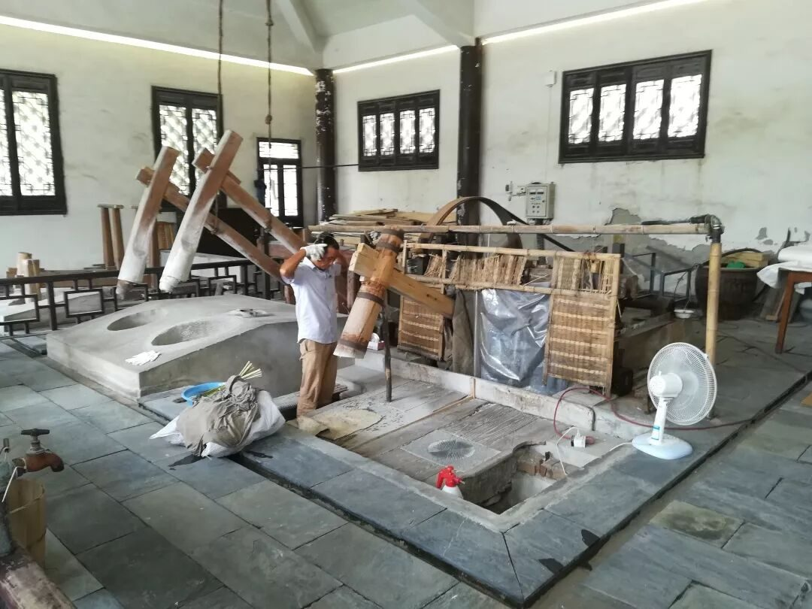

【素笺寄情·十五】不“遗”憾，不“遗”忘
皖徽行者行
十五行者徽州行，意寻文化非遗承
一园古风萧索境，芳草萋萋烟雨中
徽州千年韵风情，古物展列豪自生
青檀树皮沙田草，百余工序宣纸成
半湖山水半城景，一街繁华一巷清
方老毕生砖雕艺，赤子之心工匠翁
挥毫泼墨徽笔运，行云流水屯溪终
六日匆匆如疏影，行路无疆暗香盈
01
金风玉露一相逢，便胜却人间无数
“文化调研如果不用心去做，就会变成游山玩水。”这是行者无疆一位前辈曾经说过的，也是当初最触动我的一句话。当得知自己成为行者无疆拾遗皖徽实践团文字组的一员时，内心激动而又充满期待，出发前的每一项为调研所进行的准备工作都让我感受着这个团队的用心，我知道自己所要完成的任务，也愿意真心为这个优秀的团队去尽力付出，这是初衷，也是责任。
02
南朝四百八十寺，多少楼台烟雨中
02
一场大雨冲洗了盛夏午后的酷热，也赋予了非物质文化遗产园与往常不同的景色。湿滑的石板路，游着鱼的荷塘，木制的楼阁以及南方独有的白墙黛瓦，这些正是我曾想象的阴雨绵绵的江南模样。很想对这般景象的非遗园说一句“我喜欢”，就像一个没见过世面的孩子那样，可是我们是为了非物质文化遗产而来啊，非遗园中的非遗物品少得可怜，俨然成了一个游玩之地，非遗技艺真的要在商业化烟雨中消失殆尽，我心中的“我喜欢”可以说是很自私了。后来的参观过程中，宏村的徽派建筑亦是如此，繁华的烟火气息逐渐吞没着安徽仅存的古村落的恬静安宁，宏村很美，也很空。
03
问渠那得清如许，为有源头活水来

宣纸文化园位于泾县大山深处，一百零八道复杂工艺成就了宣纸千年寿纸的美誉，当亲眼看见工匠师傅熟练的宣纸制作手艺时，我心中除了敬佩还有欣慰。宣纸作为人类非物质文化遗产，其制作技艺保存完好，其传承保护后继有人，其产量供不应求，其盛名远播海外，也许这是非遗最美好的状态了。相比，砖雕技艺就没那么幸运，砖雕大师方新中老师在采访中谈到创新的重要性，这些古老的技艺，若是不创新，就会被淘汰，残酷的现实就是如此。后继无人是非遗当前面临的重要难题，手艺人是很辛苦的，成材不易，前途渺茫，许多的学徒选择中途退却，可以理解也实是惋惜。若是砖雕、木雕、石雕这些非遗能够有像宣纸这样的培养模式与营销策略，是不是能够存留的久些呢。
04
且将新火试新茶，诗酒趁年华
那年盛夏，有一群行者怀着文化虔诚之心前往安徽，他们在博物馆中发调查问卷，他们在古村落街头采访，他们在匠人身旁围坐，他们在非遗园中黯然，他们在正午时分的合肥街头大步前行，他们在山路行驶的大巴中疲惫睡去，他们不知道这几天的调研能够带来多大的价值，只是想去，就去了，并且无愧于心。也许在某个夏天，他们会再次出发，但遗憾的是，再也不会是那一段路，再也不会是那一群人，再也不会那样年轻。
行者无疆·拾遗皖徽
图片｜沈华，盛暘
文案｜李心悦
排版｜潘雯雯
审核｜应雨珊，潘雯雯